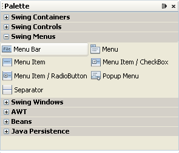
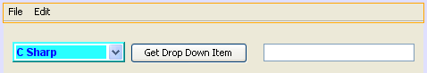
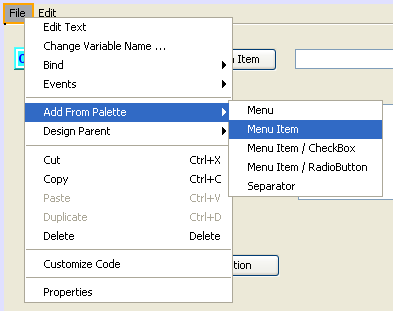
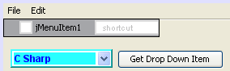
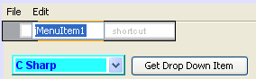
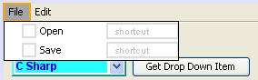
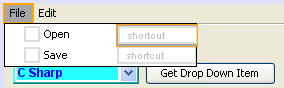
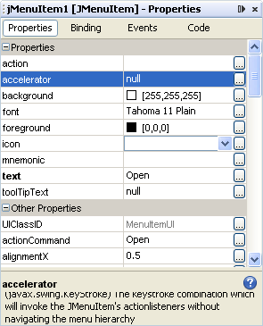
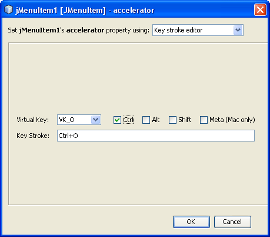
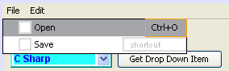

Learn Java- Complete Offline Beginners Guide
You can add menus to your Java forms, things like File, Edit, View, etc. Each menu has menu items, and these in turn can have sub menus.
Return to Design view. In the NetBeans palette, locate the Menu Bar item:

Drag one to the top of your form. When you let the mouse button go, you'll have a default File and Edit menu bar:

There's no menu items added by default, though. To add your own, click on the File menu item to select it. With the File menu item selected, right-click. A new menu will appear. Select Add From Palette > Menu Item:

A Menu Item will be added to your File menu:

What we'll do is to add menu items to open and save a file.
Double click on the default text jMenuItem1. It will then be highlighted, so that you can type over it:

Type Open, then press the enter key on your keyboard:

Add another menu item in the way. This time, type Save as the menu item:

As you can see above, you can add shortcuts for your menu items. Click on to the Open menu item, then onto the shortcut for it:

With the shortcut item selected, have a look at the properties window:

Locate the Accelerator item, and click the small button to the right of the row. A dialogue box appears. You can set which shortcut keys you want for a menu item from this dialogue box. An open shortcut is usually CTRL + O.
Type an O in the box, and Shift + O will appear. Uncheck the Shift item and check Ctrl instead:

Click OK, and the shortcut will be added to your Java menu item:

To see if all this works, click back on the Open menu item to highlight it. Now right click. From the menu that appears, select Events > Action > Action Performed. This will create a code stub for the menu item. Enter the following for the code:
javax.swing.JOptionPane.showMessageDialog( FormObjects.this, "Open" );
This is just a message box.
Run your programme and try it out. Click File > Open and you should see the message box appear. Click OK to get rid of it. Now try your shortcut. Hold down the Ctrl key on your keyboard. Keep it held down and press the letter O. Again, the menu should appear.
Stop your programme and return to your code stub. Comment out the message box. What we'll do is to write code to display a File Open dialogue box. A user can then select a file to be opened. We'll do that in the next part.